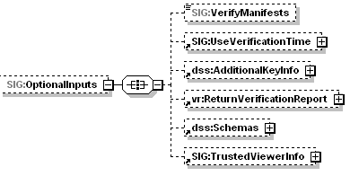
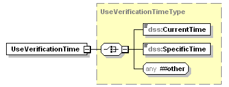

zulassungstest-relevante Abbildung von Errata 3 für Kon PTV3 > führt zu PTV3.6.0-0
Das Dokument soll die im vorliegenden Errata beschriebenen Änderungen im PET so abbilden, dass Test den funktionalen (Zulassungs-)Test des Kon PTV 3 in der Produkttypversion 3.6.0-0 vorbereiten und durchführen kann.
Im Errata - zur besseren Lesbarkeit - ggf. enthaltene unveränderte Spezifikationsanteile wurden hier nicht übernommen.
Die zum Errata veröffentlichten Dokumente sind im ELO zu finden:
Dokumentenlandkarte, in der die Produkttypversion Kon PTV3.6.0-0 eingeführt wird: elodms://3661737
snapshot vom Deckblatt des veröffentlichten Erratum:
Inhaltsverzeichnis
RSAES-PKCS1-v1-5 wird für den PTV3-Konnektor optional
TIP1-A_4617 => TIP1-A_4617-01
GS-A_4375 => GS-A_4375-01
RSAES-OAEP wird verpflichtend
GS-A_4376 => GS-A_4376-01
TIP1-A_4617-01 ; löst TIP1-A_4617 ab:
TIP1-A_4617-01
Der Konnektor MUSS den technischen Use Case TUC_KON_071 „Daten hybrid entschlüsseln” umsetzen.
Tabelle 1: TAB_KON_140 – TUC_KON_071 „Daten hybrid entschlüsseln“
| Element | Beschreibung |
|---|---|
| Name |
TUC_KON_071 „Daten hybrid entschlüsseln“ |
| Beschreibung |
Ein hybrid verschlüsseltes Dokument, das konform zu TUC_KON_070 erstellt wurde, wird entschlüsselt. Es muss eine asymmetrische Verschlüsselung vorliegen, zu der der Schlüssel auf einer Karte vorliegt. |
| Auslöser |
Aufruf in einem fachlichen Use Case oder des Verschlüsselungsbasisdienstes. |
| Vorbedingungen |
Die Karte mit dem privaten Schlüssel muss gesteckt sein und der Sicherheitszustand zur Nutzung des privaten Schlüssels muss gesetzt sein. Ein konform zu TUC_KON_070 hybrid verschlüsseltes Dokument liegt vor. Bei XML-Dokumenten: Das Dokument enthält EncryptedData Elemente. Falls mehrere Elemente des Dokumentes zu entschlüsseln sind, müssen diese alle mit demselben symmetrischen Schlüssel verschlüsselt sein. |
| Eingangsdaten |
|
| Komponenten |
Konnektor, Kartenterminal, Karte |
| Ausgangsdaten |
|
| Standardablauf |
|
| Varianten/Alterna- tiven |
Zu 6.: Zur Unterstützung von Bestandssystemen werden, neben den für den symmetrischen Teil der hybriden Verschlüsselung vorgeschriebenen kryptographischen Algorithmen, für den symmetrischen Teil der hybriden Entschlüsselung auch folgende Algorithmen unterstützt (siehe [gemSpec_Krypt#3.5.1]):
|
| Fehlerfälle |
Siehe Tabelle TAB_KON_142 Fehlercodes TUC_KON_071 „Daten hybrid entschlüsseln“. Wenn im Ablauf des TUCs ein anderer Fehler als die in Tabelle TAB_KON_142 Fehlercodes TUC_KON_071 „Daten hybrid entschlüsseln“ beschriebenen Fehler auftritt, wird Fehler 4107 gemeldet. |
| Nichtfunktionale Anforderungen |
keine |
| Zugehörige Diagramme |
Abbildung PIC_KON_059 Aktivitätsdiagramm „Daten hybrid entschlüsseln“ |
Abbildung 1: PIC_KON_059 Aktivitätsdiagramm „Daten hybrid entschlüsseln“
Tabelle 2: TAB_KON_142 Fehlercodes TUC_KON_071 „Daten hybrid entschlüsseln“
| Fehlercode |
ErrorType |
Severity |
Fehlertext |
|---|---|---|---|
| Neben den Fehlercodes der aufgerufenen technischen Use Cases können folgende weitere Fehlercodes auftreten: |
|||
| 4106 |
Technical |
Error |
falscher Schlüssel |
| 4107 |
Technical |
Error |
hybride Entschlüsselung konnte nicht durchgeführt werden |
| 4103 |
Technical |
Error |
XML-Element nicht gefunden |
| 4104 |
Technical |
Error |
XML-Element nicht eindeutig identifiziert |
| 4201 |
Technical |
Error |
kryptographischer Algorithmus vom Konnektor nicht unterstützt |
Die AFO TIP1-A_4617 wird beim PTV3 Konnektor entfernt.
GS-A_4375-01 ; löst GS-A_4375 ab:
GS-A_4375-01
Alle Produkttypen, die Dokumente mittels [XMLEnc-1.1] RSA-basiert hybrid entschlüsseln, KÖNNEN für die Entschlüsselung des symmetrischen Schlüssels den Algorithmus RSAES-PKCS1-v1_5 unter Berücksichtigung von speziellen Maßnahmen gegen Seitenkanalangriffe (vgl. [BSI-TR-03116-1] S. 16) verwenden.
<=
Die AFO GS-A_4375 wird beim PTV3-Konnektor entfernt.
GS-A_4376-01 ; löst GS-A_4376 ab:
GS-A_4376-01
Alle Produkttypen, die Dokumente mittels [XMLEnc-1.1] RSA-basiert hybrid verschlüsseln, MÜSSEN für den Schlüsseltransport den Algorithmus RSAES-OAEP gemäß [PKCS#1] verwenden.
<=
Die AFO GS-A_4376 wird beim PTV3-Konnektor entfernt.
In Kapitel 3.2 Typkonformität werden zusätzliche Prüfungen für den signierten Notfalldatensatz ergänzt, um zu prüfen, dass die Signatur entsprechend der Signaturrichtlinie erstellt wurde.
Eine falsche URI der Signaturrichtlinie wird korrigiert.
In Kapitel 3.2 Typkonformität wird ergänzt:
Bei der Verifikation wird der Typ identifiziert durch SigPolicyID/Identifyer = "urn:gematik:fa:sak:nfdm:r1:v1" in der Signatur
Im Rahmen der Typenkonfomität ist darüber hinaus zu prüfen, dass
• Der signierte Notfalldatensatz genau eine Signatur enthält,
• Die Signatur das Element NFD:Notfalldaten referenziert.
Die URI der Signaturrichtlinie wird korrigiert:
- Tabelle2:
/fa/nfds/NFD_Document_v1_4.xsd http://ws.gematik.de/fa/nfds/NFD_Document/v1.4
- Tabelle3:
urn:gematik:fa:sak:nfdm:r1:v1 http://ws.gematik.de/fa/nfds/NFD_Document/v1.4 NFD_Document
Es wird die falsche Version von gemRL_QES_NFDM referenziert.
Tabelle 2: Mitgeltende Dokumente:
[gemRL_QES_NFDM] Signaturrichtlinie QES Notfalldaten-Management (NFDM) 1.14.0
Da auf absehbare Zeit in der TI keine Möglichkeit bestehen wird, qualifizierte Zeitstempel zu erstellen, wird eine Prüfung qualifizierter Zeitstempel durch den Konnektor aktuell nicht benötigt. Dabei wird auch die Inkonsistenz beseitigt, dass die
Spezifikation nicht die Anforderung aus gemKPT_Arch_TIP umsetzt, da es sich um unterschiedliche Zeitstempel handelt.
Übernahme aus dem Anlagendokument:
TIP1-A_2255-01
Die Schnittstelle I_SAK_Operations MUSS die logische Operation verify_Document_QES implementieren.
Tabelle 3: Operation verify_Document_QES
| I_SAK_Operations |
Berechtigung: CS, FM |
||||
|---|---|---|---|---|---|
| verify_Document_QES |
Parameter |
V, I, A |
|||
| In |
SignedData |
SignedDocumentType |
IM103 |
SH/M/M |
|
| In |
Certificate |
CertificateX.509 |
IM404 |
M/M/M |
|
| Out |
VerificationResult |
VerificationResultType |
IM420 |
M/H/H |
|
| Diese Operation überprüft die qualifizierte elektronische Signatur (QES) des übergebenen Dokuments (SignedData) gemäß [eIDAS] unter Verwendung des mit dem Dokument übergebenen Signaturzertifikats. Das Signaturzertifikat muss entweder bereits im signierten Dokument enthalten sein oder über den optionalen Parameter Certificate separat übergeben werden. Es wird zuerst die Gültigkeit des Signaturzertifikats durch Nachnutzung des Dienstes „Prüfung_Zertifikat“ geprüft. Dies umfasst die Prüfung im Online- wie auch im Offline-Fall. Sollte das übergebene Dokument (SignedData) eine Sperrinformation (OCSP-Response) für das Signaturzertifikat enthalten, so wird diese bei der Prüfung des Zertifikates verwendet. War das genutzte Zertifikat bei Erstellung der Signatur nicht gültig, dann ist auch die Signatur im rechtlichen Sinn nicht gültig. Im Ergebnis der Operation (VerificationResult) wird dokumentiert, ob die Prüfung erfolgreich war oder ob sie fehlgeschlagen ist. Falls die Prüfung nicht vollständig erfolgen konnte, da z.B. die Online-Statusprüfung des Zertifikats nicht möglich war (Offline-Fall), muss dies dem Nutzer mitgeteilt werden. Dazu werden die durchgeführten Prüfschritte im Ergebnis der Operation (VerificationResult) aufgeführt. Falls ein Algorithmus oder Parameter, der zur Signatur genutzt wurde, nicht mehr als geeignet betrachtet wird, muss die Signaturprüfung trotzdem durchgeführt werden. Das Ergebnis der Signaturprüfung muss im Parameter VerificationResult enthalten sein. In den SignedData enthaltene qualifizierte Zeitstempel werden ausgewertet. Vor der Prüfung der Signatur muss der Status der verwendeten Algorithmen gegen den aktuell gültigen Algorithmenkatalog der zuständigen Behörde (BNetzA) geprüft werden. Es werden die nachfolgenden Dokumententypen mit dem genannten Signaturformat unterstützt:
Es werden nur Signaturen der kryptographischen Identitäten von Leistungserbringern (zulässige Karten: HBA wie auch zeitlich begrenzt die HBA-Vorläuferkarten HBA-qSig und ZOD-2.0) geprüft. Die Operation unterstützt mindestens Dokumente bis zu einer Größe von 25 MB. |
|||||
| Verfügbarkeit: NA, Nichtabstreitbarkeit: NA |
|||||
in Kapitel 4.1.8.1.3 Signaturzeitpunkt
Bezogen auf den vom Konnektor für die Signaturprüfung anzunehmenden Signaturerstellungszeitpunkt werden in dieser Spezifikation die Bezeichner Ermittelter_Signaturzeitpunkt und Benutzerdefinierter_Zeitpunkt verwendet.
Ermittelter_Signaturzeitpunkt: Vom Konnektor ermittelter Zeitpunkt, zu dem eine Signatur geprüft wird. Es werden folgende Signaturzeitpunkte ermittelt:
1. Ermittelter_Signaturzeitpunkt_Eingebettet: in der Signatur eingebetteter Zeitpunkt (falls vorhanden)
2. Ermittelter_Signaturzeitpunkt_Qualifiziert: qualifizierter Zeitstempel über die Signatur (falls vorhanden)
2. Ermittelter_Signaturzeitpunkt_System: Systemzeit des Konnektors bei Signaturprüfung
Anmerkung: Bei vom Konnektor selbst erstellten Signaturen ist immer ein in der Signatur eingebetteter Zeitpunkt vorhanden, jedoch kein qualifizierter Zeitstempel, da in der TI keine qualifizierten Zeitstempel ausgestellt werden. Sollte ein Dokument mit einem qualifizierten Zeitstempel versehen sein, so wird dieser nicht für die Ermittlung des Signaturzeitpunkts herangezogen.
Benutzerdefinierter_Zeitpunkt: Vom Benutzer beim Aufruf der Signaturprüfoperation als Parameter an den Konnektor übergebener Zeitpunkt, zu dem eine Signatur geprüft werden soll.
in Kapitel 4.1.8.4.6 TUC_KON_151 „QES Dokumentensignatur prüfen“
TIP1-A_4672-01
Der Konnektor MUSS den technischen Use Case TUC_KON_151 „QES-Dokumentensignatur prüfen” umsetzen.
Tabelle 4: TAB_KON_591 - TUC_KON_151 „QES-Dokumentensignatur prüfen“
| Element |
Beschreibung |
| Name |
TUC_KON_151 „QES-Dokumentensignatur prüfen” |
| Beschreibung |
Es wird die QES eines Dokuments geprüft. Dabei werden die Signaturverfahren laut Tabelle TAB_KON_582 – Signaturverfahren unterstützt. Sind mehrere Signaturen vorhanden, so werden alle geprüft. Auch Parallel- und Gegensignaturen MÜSSEN unterstützt werden. |
| Eingangsanforderung |
keine |
| Auslöser |
Aufruf durch ein Clientsystem (Operation VerifyDocument) oder durch ein Fachmodul im Konnektor |
| Vorbedingungen |
keine |
| Eingangsdaten |
|
| Komponenten |
Konnektor |
| Ausgangsdaten |
|
| Standardablauf |
1. „DocumentValidation“: Das signierte Dokument wird validiert mit Aufruf TUC_KON_080 „Dokument validieren“{ … }.
Treten Fehler bei der Validierung der Typkonformität auf, wenn die Signatur im Dokument eingebettet ist, wird die Prüfung mit einem Fehler abgebrochen.
Treten bei der Typkonformität, wenn die Signatur nicht im Dokument eingebettet ist, Fehler auf, so bricht der TUC nicht ab, sondern führt die folgenden Schritte soweit sinnvoll möglich durch. (Die Entscheidung über das sinnvoll Durchführbare liegt beim Hersteller des Konnektors.)
2. „CoreValidation“:
Es erfolgt die mathematische Prüfung der Signatur, bestehend aus der Prüfung der Hash-Kette bis zum signierten Hashwert und der Prüfung der Signatur unter Verwendung des öffentlichen Schlüssels, des Signaturwertes und des signierten Hashwertes.
XML-Signatur: Die Core Validation erfolgt entsprechend [XMLDSig] Kapitel 3.2 Core Validation. CMS-Signatur: Die Core Validation erfolgt entsprechend Cryptographic Message Syntax (CMS) Kapitel 5.6 Signature Verification Process [RFC5652]. PDF-Signatur: Die Core Validation erfolgt entsprechend [PAdES-3] Kapitel 4.6 Signature Validation aus PAdES-BES Part 3. Auch wenn die Validierung fehlschlägt, werden die folgenden Prüfschritte durchgeführt, so dass ein vollständiges Prüfprotokoll erstellt werden kann.
3. „CheckSignatureCertificate“: Teil 1: Signaturzertifikat ermitteln XML-Signatur: Das Signaturzertifikat ist im XMLDSig Element ds:KeyInfo/ds:X509Data gespeichert [XMLDSig] oder wird als Eingangsparameter übergeben. CMS-Signatur: Das Signaturzertifikat für CAdES ist im Feld certificates im SignedData Container gespeichert [CAdES] oder wird als Eingangsparameter übergeben. PDF-Signatur: Das PDF Signaturzertifikat für PAdES ist im Feld SignedData.certificates entsprechend Kapitel 6.1.1 „Placements of the signing certificate“ [PAdES Baseline Profile] gespeichert oder wird als Eingangsparameter übergeben. Teil 2: Signaturzeitpunkt bestimmen Der Signaturzeitpunkt Ermittelter_Signaturzeitpunkt_Eingebettet wird wie folgt selektiert: XML-Signatur: Das XML element SigningTime spezifiziert den Signaturzeitpunkt entsprechend Kapitel 7.2.1 XAdES [XAdES]. CMS-Signatur: Das Attribut SigningTime spezifiziert den Signaturzeitpunkt entsprechend Kapitel 11.3 CMS [CMS]. PDF-Signatur: Der Signaturzeitpunkt kann dem M Eintrag des Signature Dictionary entnommen werden [PAdES Baseline Profile] Kapitel 6.2.1 Signing time. Der Signaturzeitpunkt Benutzerdefinierter_Zeitpunkt liegt gegebenenfalls als Aufrufparameter vor. Der Signaturzeitpunkt Ermittelter_Signaturzeitpunkt_System wird ermittelt. Teil 3: Signaturzertifikatsprüfung: Bei der folgenden Signaturzertifikatsprüfung sind die Signaturzeitpunkte gemäß [TIP1-A_5540] zu berücksichtigen. Die Signaturzertifikatsprüfung erfolgt durch Aufruf von TUC_KON_037 „Zertifikat prüfen“ { certificate = C.HP.QES; qualifiedCheck = required; baseTime = Signaturzeitpunkt; offlineAllowNoCheck = true; validationMode = OCSP; ocspResponses = OCSP-Response; getOCSPResponses = includeRevocationInfo }. Sind OCSP-Responses in der Signatur eingebettet, ist die jüngsten OCSP-Response des EE-Zertifikats, die für die Zertifikatsprüfung notwendig ist, beim Aufruf von TUC_KON_037 zu übergeben. Sofern der Aufruf von TUC_KON_037 ocspResponses zurückgibt, wird die OCSP-Response des EE-Zertifikats in die Signatur eingebettet. Auch wenn die Zertifikatsprüfung fehlschlägt, werden die folgenden Prüfungen durchgeführt.
4. „CheckPolicyConstraints“:
In diesem Schritt wird das signierte Dokument entsprechend der Profilierung der Signaturformate (siehe Anhang B.2) geprüft. Es sind die Vorgaben für die Prüfung von Signaturen aus den Standards für AdES [XAdES], [XAdES Baseline], [CAdES], [CAdES Baseline], [PAdES-3] und [PAdES Baseline] umzusetzen. Dabei sind die Vorgaben aus Tabelle TAB_KON_779 „Profilierung der Signaturformate“ und Tabelle TAB_KON_778 „Einsatzbereich der Signaturvarianten“ zu erfüllen. Auch wenn nicht alle Anforderungen an das Format des signierten Dokuments erfüllt werden, wird die Prüfung mit den folgenden Schritten fortgesetzt, um ein vollständiges Prüfungsprotokoll zu erhalten.
5. Das Prüfergebnis (VerificationResult, OptionalOutput) wird an den Aufrufer zurückgegeben (siehe TAB_KON_593 Übersicht Status für Prüfung einer Dokumentensignatur).
|
| Varianten/Alternativen |
Keine |
| Fehlerfälle |
Das Verhalten des TUCs bei einem Fehlerfall ist in TAB_KON_592 Fehlercodes TUC_KON_151 „QES Dokumentensignatur prüfen“ beschrieben. (->1) keine Signatur in signedDocument und signatureObject vorhanden: 4253. ( 2 „CoreValidation“) Interner Fehler: 4001, Signatur des Dokuments ungültig: 4115, Signatur umfasst nicht das gesamte Dokument: 4262 (3 „CheckSignatureCertificate“) Interner Fehler: 4001, Signaturzertifikat ermitteln ist fehlgeschlagen: 4206. (4 „CheckPolicyConstraints“) Interner Fehler: 4001, Dokument nicht konform zu Regeln für QES: 4124, Dokument nicht konform zu Profilierung der Signaturformate: 4208. |
| Nichtfunktionale Anforderungen |
Keine |
| Zugehörige Diagramme |
keine |
Tabelle 5: TAB_KON_592 Fehlercodes TUC_KON_151 „QES Dokumentensignatur prüfen“
| Fehlercode |
ErrorType |
Severity |
Fehlertext |
|---|---|---|---|
| Neben den Fehlercodes der aufgerufenen technischen Use Cases können folgende weitere Fehlercodes auftreten: |
|||
| 4001 |
Technical |
Error |
interner Fehler |
| 4115 |
Security |
Error |
Signatur des Dokuments ungültig. Prüfung der Hashwertkette bzw. Prüfung der kryptographischen Signatur fehlgeschlagen. |
| 4124 |
Technical |
Error |
Dokument nicht konform zu Regeln für QES |
| 4206 |
Technical |
Error |
Signaturzertifikat ermitteln ist fehlgeschlagen |
| 4208 |
Technical |
Error |
Dokument nicht konform zu Profilierung der Signaturformate |
| 4253 | Technical | Error | Keine Signatur im Aufruf |
| 4262 | Technical | Error | Signatur umfasst nicht das gesamte Dokument |
Tabelle 6: TAB_KON_593 Übersicht Status für Prüfung einer Dokumentensignatur
| VerificationResult für gesamtes Dokument (VerificationResult/HighLevelResult) |
|||
|---|---|---|---|
| Wert |
Bedeutung |
||
| VALID |
Wenn VerificationResult für alle Signaturen zum Dokument VALID |
||
| INVALID |
Wenn VerificationResult für eine Signatur zum Dokument INVALID |
||
| INCONCLUSIVE |
in allen anderen Fällen |
||
| VerificationResult pro Signatur (VerificationReport/IndividualReport/Result) | |||
| Wert | Bedeutung mögliche Ausprägungen im VerificationReport |
||
| VALID | Die Signatur wurde gemäß den Regeln für die QES geprüft und für gültig befunden. | ||
| ResultMajor = urn:oasis:names:tc:dss:1.0:resultmajor:Success ResultMinor = urn:oasis:names:tc:dss:1.0:resultminor:valid:signature:OnAllDocuments |
|||
| ResultMajor = urn:oasis:names:tc:dss:1.0:resultmajor:Success ResultMinor = urn:oasis:names:tc:dss:1.0:resultminor:valid:signature:HasManifestResults |
|||
| INVALID | Die Signatur ist ungültig oder aufgrund eines Fehlers konnte die Signaturprüfung nicht durchgeführt werden. | ||
| ResultMajor = urn:oasis:names:tc:dss:1.0:resultmajor:Success ResultMinor = urn:oasis:names:tc:dss:1.0:resultminor:invalid:IncorrectSignature |
|||
| ResultMajor = urn:oasis:names:tc:dss:1.0:resultmajor:RequesterError | |||
| ResultMajor = urn:oasis:names:tc:dss:1.0:resultmajor:ResponderError | |||
| ResultMajor = urn:oasis:names:tc:dss:1.0:resultmajor:InsufficientInformation ResultMinor = urn:oasis:names:tc:dss:1.0:resultminor:invalid:IncorrectSignature |
|||
| ResultMajor = urn:oasis:names:tc:dss:1.0:resultmajor:InsufficientInformation ResultMinor = urn:oasis:names:tc:dss:1.0:resultminor:CertificateChainNotComplete |
|||
| INCONCLUSIVE | Die Signatur wurde gemäß den Regeln für die QES geprüft. Allerdings konnten eine oder mehrere Prüfungen nicht vollständig durchgeführt werden. Einzelheiten finden sich in Result-Detail. Die Prüfungen, die durchgeführt werden konnten, waren erfolgreich. |
||
| ResultMajor = urn:oasis:names:tc:dss:1.0:resultmajor:InsufficientInformation ResultMinor = urn:oasis:names:tc:dss:1.0:resultminor:OcspNotAvailiable Hinweis: Das Erreichen dieses Zustandes hängt davon ab, ob eine OCSP-Abfrage nicht durchgeführt werden konnte, unabhängig davon, ob die Ursache dafür die Offlineschaltung des Konnektors (MGM_LU_ONLINE = Disabled) oder die Nichterreichbarkeit des OCSP-Responders im Online-Betrieb (MGM_LU_ONLINE = Enabled) ist. |
|||
TIP1-A_5540-01
Der Konnektor MUSS zur QES-Signaturprüfung ein Prüfergebnis, das sich auf genau einen angenommenen Signaturzeitpunkt bezieht, an den Aufrufer zurückgeben.
Die Auswahl des angenommenen Signaturzeitpunkts, auf den sich das Signaturergebnis bezieht, erfolgt hierarchisch:
in Kapitel 4.1.8.5.2 VerifyDocument (nonQES und QES)
TIP1-A_5034-03
Der Signaturdienst des Konnektors MUSS an der Clientschnittstelle eine an [OASIS-DSS] angelehnte Operation VerifyDocument (nonQES und QES) anbieten.
Tabelle 7: TAB_KON_066 Operation VerifyDocument (nonQES und QES)
| Name |
VerifyDocument |
||
|---|---|---|---|
| Beschreibung |
Diese Operation verifiziert die Signatur eines Dokumentes. Der Konnektor MUSS jede konform zur Außenschnittstelle SignDocument erzeugte Signatur durch VerifyDocument prüfen können. Außerdem MÜSSEN die zusätzlich geforderten Signaturverfahren zur Dokumentensignaturprüfung unterstützt werden Das Ergebnis der Prüfung wird, wenn gefordert, in Form eines standardisierten Prüfberichts in einer VerificationReport-Struktur gemäß [OASIS-VR] zurückgeliefert. |
||
| Aufruf-parameter |
|||
| Name |
Beschreibung |
||
| CCTX: Context |
MandantId, ClientSystemId, WorkplaceId verpflichtend; UserId nicht ausgewertet |
||
| TvMode |
Der Parameter wird im Konnektor nicht ausgewertet. |
||
| SIG: Optional Inputs |
Enthält optionale Eingabeparameter (angelehnt an dss:OptionalInputs gemäß [OASIS-DSS] Section 2.7): Die zulässigen optionalen Eingabeparameter sind unten erläutert. |
||
| SIG: Document |
Enthält im Fall der Prüfung von detached oder enveloped Signaturen das zur Signatur gehörende bzw. das diese umschließende Dokument (siehe [OASIS-DSS] Section 2.4.2 und oben). |
||
| dss: Signa ture Object |
Enthält die zu prüfende Signatur, wenn sie nicht im Dokument selbst eingebettet ist ([OASIS-DSS] Kapitel 4.1). Hierbei werden XML-Signaturen als ds:Signature Element und alle anderen Signaturen als dss:Base64Signature mit entsprechend gesetztem Type-Attribut (siehe SignatureType, Operationen SignDocument und ExternalAuthenticate) übergeben, wobei die nachfolgenden Werte unterstützt werden müssen:
|
||
| SIG: Include Revocat ionInfo |
Durch diesen verpflichtenden Schalter kann der Aufrufer die Einbettung von zum Zeitpunkt der Signaturprüfung vorliegenden Sperrinformationen anfordern. Ist bereits eine Sperrinformation eingebettet, so wird die neue Sperrinformation zusätzlich eingebettet. Für in einer Gegensignatur enthaltene Signaturen erfolgt keine Einbettung von Sperrinformationen. Für PDF-Signaturen erfolgt keine Einbettung von Sperrinformationen. Der Konnektor nimmt die Warnung 4261 in die Antwort auf. |
||
 |
|||
| SIG: Verify Mani fests |
Durch das in [OASIS-DSS] (Abschnitt 4.5.1) definierte Element kann die Prüfung eines ggf. vorhandenen Manifests angefordert werden. |
||
 |
|||
| SIG: Use Verifi cation Time |
Durch das in [OASIS-DSS] (Abschnitt 4.5.2) spezifizierte Element kann die Prüfung der Signatur bezüglich eines durch den Aufrufer bestimmten Zeitpunktes (Benutzerdefinierter_Zeitpunkt) erfolgen. |
||
| dss: Addit ional KeyInfo |
Durch das in [OASIS-DSS] (Abschnitt 4.5.4) spezifizierte Element kann zusätzliches, für die Prüfung benötigtes, Schlüsselmaterial übergeben werden. |
||
| vr: Return Verifi cation Report |
Durch dieses in [OASIS-VR] spezifizierte Element kann die Erstellung eines ausführlichen Prüfberichtes angefordert werden. Der Konnektor MUSS die Anforderungen der Konformitätsstufe 2 („Comprehensive“) erfüllen und die Profilierung aus Anhang B3 beachten. |
||
| dss: Schemas |
Durch das in [OASIS-DSS] (Abschnitt 2.8.5) definierte Element können eine Menge von XML-Schematas übergeben werden, die zur Validierung des übergebenen XML-Dokumentes verwendet werden können. Zur Struktur dieses Elements siehe Beschreibung des Parameters dss:Schemas der Operation SignDocument. |
||
| SIG: Viewer Info |
Der Parameter wird im Konnektor nicht ausgewertet. |
||
| Rückgabe |
|||
| Status |
Enthält den Ausführungsstatus der Operation. |
||
| SIG: Verifi cation Result |
Das Element Sig:VerificationResult enthält das Ergebnis der Prüfung als Ampel, den Typ des zugehörigen angenommenen Signaturzeitpunkts und der angenommene Signaturzeitpunkt selbst. |
||
| SIG: High Level Result |
Das Ergebnis der Prüfung (Ampelschaltung) mit folgenden Werten:
|
||
| SIG: Time stamp Type |
Der Typ des angenommenen Signaturzeitpunkts mit folgenden Werten:
|
||
| SIG: Time stamp |
Im Element SIG:Timestamp wird der zu SIG:TimestampType gehörende Zeitstempel zurückgegeben. |
||
| SIG: Optio nal Outputs |
Enthält (angelehnt an dss:OptionalOutputs, wie in Abschnitt 2.7 von [OASIS-DSS] beschrieben) optionale Ausgangselemente: |
||
| dss: Verify Manifest Results |
Dieses in Abschnitt 4.5.1 von [OASIS-DSS] definierte Element enthält Informationen zur Prüfung eines ggf. vorhandenen Signaturmanifests und wird zurückgeliefert, sofern beim Aufruf das dss:VerifyManifest-Element, aber nicht das RequestVerificationReport als optionales Eingabeelement übergeben wurde. |
||
| SIG: Document With Signa ture |
Dieses in Abschnitt 4.5.8 von [OASIS-DSS] spezifizierte Element wird zurückgeliefert, falls eine in dem Dokument enthaltene Signatur (Enveloped Signature) in Verbindung mit dem SIG:IncludeRevocationInfo-Element geprüft wurde. |
||
| dss: Updated Signa ture |
Dieses in Abschnitt 4.5.8 von [OASIS-DSS] spezifizierte Element wird zurückgeliefert, falls eine abgesetzte (Detached Signature) oder umschließende (Enveloping Signature) in Verbindung mit dem SIG:IncludeRevocationInfo- Element geprüft wurde. |
||
| vr: Verifi cation Report |
Dieses in [OASIS-VR] spezifizierte Element wird zurückgeliefert, falls das ReturnVerificationReport-Element als Eingabeparameter verwendet wurde. Die Profilierung von Anhang B3 MUSS beachtet werden. |
||
| Vorbe-dingungen |
Keine |
||
| Nachbe-dingungen |
Keine |
||
Tabelle 8: TAB_KON_760 Ablauf Operation VerifyDocument (nonQES und QES)
| Nr. |
Aufruf Technischer Use Case oder Interne Operation |
Beschreibung |
|---|---|---|
1. |
checkArguments |
Die übergebenen Werte werden auf Konsistenz und Gültigkeit überprüft. Treten hierbei Fehler auf, so bricht die Operation mit Fehler 4000 ab. |
| 2. |
TUC_KON_000 „Prüfe Zugriffs- berechtigung“ |
Die Prüfung erfolgt durch den Aufruf TUC_KON_000 { mandantId = $context.mandantId; clientsystemId = $context.clientsystemId; workplaceId = $context.workplaceId; needCardSession= false; } Tritt bei der Prüfung ein Fehler auf, bricht die Operation mit Fehlercode aus TUC_KON_000 ab. |
| 3. |
prüfe, ob QES oder nonQES |
Ist im jeweiligen Signaturzertifikat mindestens ein QCStatement mit dem OID id-etsi-qcs-QcCompliance (0.4.0.1862.1.1) enthalten, handelt es sich um eine QES-Signatur, andernfalls liegt eine nonQES-Signatur vor. |
| Für QES-Signaturen wird Schritt 4 ausgeführt. Für nonQES-Signaturen wird Schritt 5 ausgeführt. |
||
| 4.a |
Prüfe Signaturdienst-Modul |
Prüfe, ob MGM_LU_SAK=Enabled. Ist dies nicht der Fall, so bricht die Operation mit Fehler 4125 ab. |
| 4.b |
TUC_KON_151 „QES Dokumentensignatur prüfen“ |
Die QES wird geprüft. Tritt hierbei ein Fehler auf, bricht die Operation ab. |
| 5. |
TUC_KON_161 „nonQES Dokumentensignatur prüfen“ |
Die nonQES wird geprüft. Tritt hierbei ein Fehler auf, bricht die Operation ab. |
Tabelle 9: TAB_KON_761 Fehlercodes „VerifyDocument (nonQES und QES)“
| Fehlercode |
ErrorType |
Severity |
Fehlertext |
|---|---|---|---|
| Neben den Fehlercodes der aufgerufenen TUCs (siehe Tabelle TAB_KON_760 Ablauf Operation VerifyDocument) können folgende weiteren Fehlercodes auftreten: |
|||
| 4000 |
Technical |
Error |
Syntaxfehler |
| 4261 | Technical | Warning | Einbettung von Revocation-Informationen nicht unterstützt |
| 4125 |
Technical |
Error |
LU_SAK nicht aktiviert |
>> Bei der dadurch abgelösten TIP1-A_5034 in Errata 2 wurde daher dort der Status= abgelöst gesetzt.
in Kapitel 6.3 Profilierung VerificationReport
…
Sonderfälle:
Dokument mit parallelen Signaturen
Für jede Signatur wird ein IndividualReport erzeugt.
Dokument mit Signatur und Gegensignatur
Für jede Signatur wird ein IndividualReport erzeugt. Dokument mit Signatur und qualifiziertem Zeitstempel.
Um die Zertifizierung des PTV3-Konnektors zu beschleunigen, wird eine Zulassung des PTV3-Konnektors ohne nonQES-XAdES-Signaturerstellung und Prüfung ermöglicht.
Neue Anforderung: A_18756
A_18756
Der Konnektor KANN alle Aufrufe zu Signaturerstellung einer nonQES-XAdES Signatur mit Fehler 4111 und alle Aufrufe zur Signaturprüfung einer nonQES-XAdES Signatur mit Fehler 4112 beantworten. Die Signaturvarianten aus TAB_KON_778 werden damit weiter eingeschränkt. Wird die nonQES-XAdES Signatur umgesetzt, so ist diese in der Sicherheitszertifizierung zu betrachten. <=
Neue Anforderung: A_18780
A_18780
Der Konnektor DARF Dokumente im PDF/A-3 Format NICHT unterstützen.
<=
Anmerkung: Die Anforderungen der folgenden Tabelle stellen einen Auszug dar und verteilen sich innerhalb der Tabelle des Originaldokuments [gemProdT_...]. Alle Anforderungen der Tabelle des Originaldokuments, die in der folgenden Tabelle nicht ausgewiesen sind, bleiben unverändert bestehenden.
Tabelle 10: Anforderungen zur funktionalen Eignung "Produkttest/Produktübergreifender Test"
| Afo-ID |
Afo-Bezeichnung |
Quelle (Referenz) |
|---|---|---|
| TIP1-A_4617 | TUC_KON_071 „Daten hybrid entschlüsseln“ | gemSpec_Kon |
| TIP1-A_4617-01 | TUC_KON_071 „Daten hybrid entschlüsseln“ | gemErrata_4_Kon_PTV3 |
| TIP1-A_4672 | TUC_KON_151 „QES-Dokumentensignatur prüfen“ | gemSpec_Kon |
| TIP1-A_4672-01 | TUC_KON_151 „QES-Dokumentensignatur prüfen“ | gemErrata_4_Kon_PTV3 |
| TIP1-A_5540 | QES-Signaturprüfergebnis bezogen auf Signaturzeitpunkt | gemSpec_Kon |
| TIP1-A_5540-01 | QES-Signaturprüfergebnis bezogen auf Signaturzeitpunkt | gemErrata_4_Kon_PTV3 |
| TIP1-A_5034 | Operation VerifyDocument (nonQES und QES) | gemErrata_2_Kon_PTV3 |
| TIP1-A_5034-03 | Operation VerifyDocument (nonQES und QES) | gemErrata_4_Kon_PTV3 |
| A_18780 | PFD/A-3 DARF NICHT unterstützt werden | gemErrata_4_Kon_PTV3 |
Tabelle 11: Anforderungen zur funktionalen Eignung "Herstellererklärung"
| Afo-ID |
Afo-Bezeichnung |
Quelle (Referenz) |
|---|---|---|
| A_18756 |
Optionalität von nonQES-XAdES Signatur |
gemErrata_4_Kon_PTV3 |
Tabelle 12: Anforderungen zur Sicherheitstechnische Eignung "CC-Evaluierung"
| Afo-ID |
Afo-Bezeichnung |
Quelle (Referenz) |
|---|---|---|
| TIP1-A_4617 | TUC_KON_071 „Daten hybrid entschlüsseln“ | gemSpec_Kon |
| TIP1-A_4617-01 | TUC_KON_071 „Daten hybrid entschlüsseln“ | gemErrata_4_Kon_PTV3 |
| GS-A_4375 | XML-Verschlüsselung - Hybrid, Schlüsseltransport | gemSpec_Krypt |
| GS-A_4375-01 | XML-Verschlüsselung - Hybrid, Schlüsseltransport | gemErrata_4_Kon_PTV3 |
| GS-A_4376 |
XML-Verschlüsselung - Hybrid, Schlüsseltransport RSAES-OAEP |
gemSpec_Krypt |
| GS-A_4376-01 | XML-Verschlüsselung - Hybrid, Schlüsseltransport RSAES-OAEP | gemErrata_4_Kon_PTV3 |
| TIP1-A_4672 | TUC_KON_151 „QES-Dokumentensignatur prüfen“ | gemSpec_Kon |
| TIP1-A_4672-01 | TUC_KON_151 „QES-Dokumentensignatur prüfen“ | gemErrata_4_Kon_PTV3 |
| TIP1-A_5540 | QES-Signaturprüfergebnis bezogen auf Signaturzeitpunkt | gemSpec_Kon |
| TIP1-A_5540-01 | QES-Signaturprüfergebnis bezogen auf Signaturzeitpunkt | gemErrata_4_Kon_PTV3 |